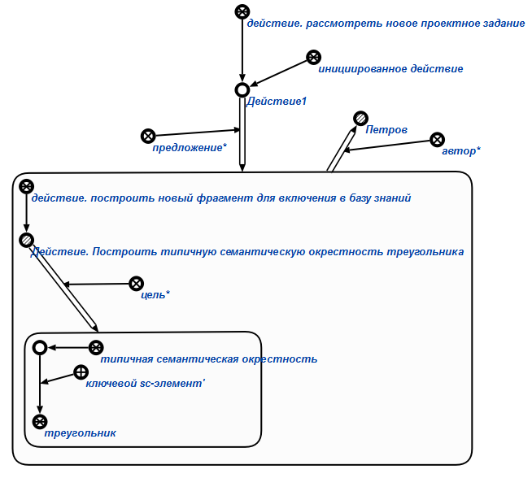

Команда формирования предложения проектного задания предназначена для формирования предложения* нового проектного задания. Единственным аргументом запроса является знак структуры, которую необходимо разработать в процессе выполнения данного проектного задания. Результатом выполнения команды является формирование структуры, описывающей цель* и автора* проектного задания. Например:
